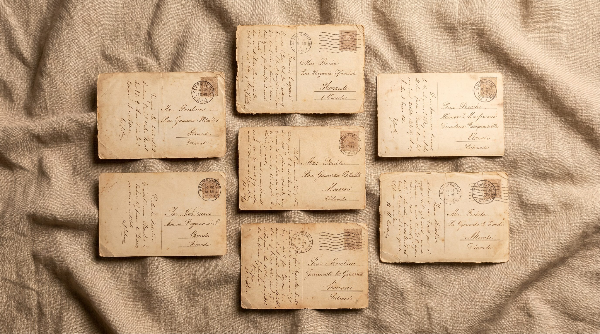
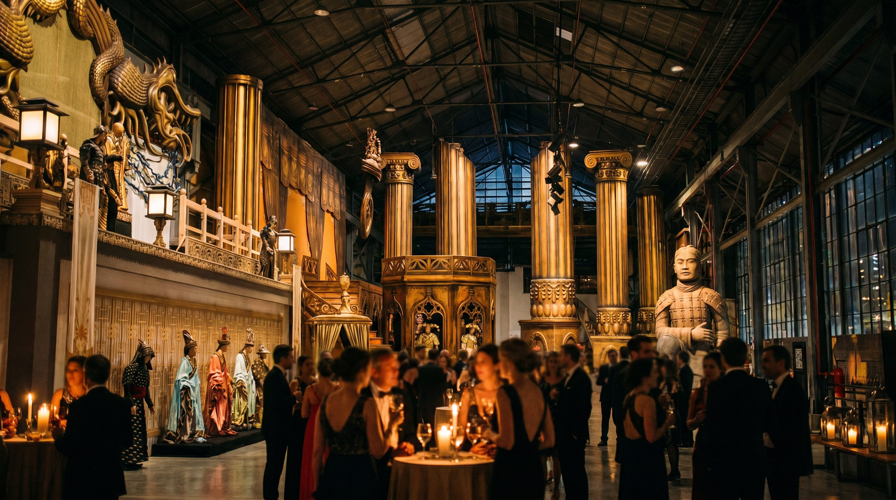
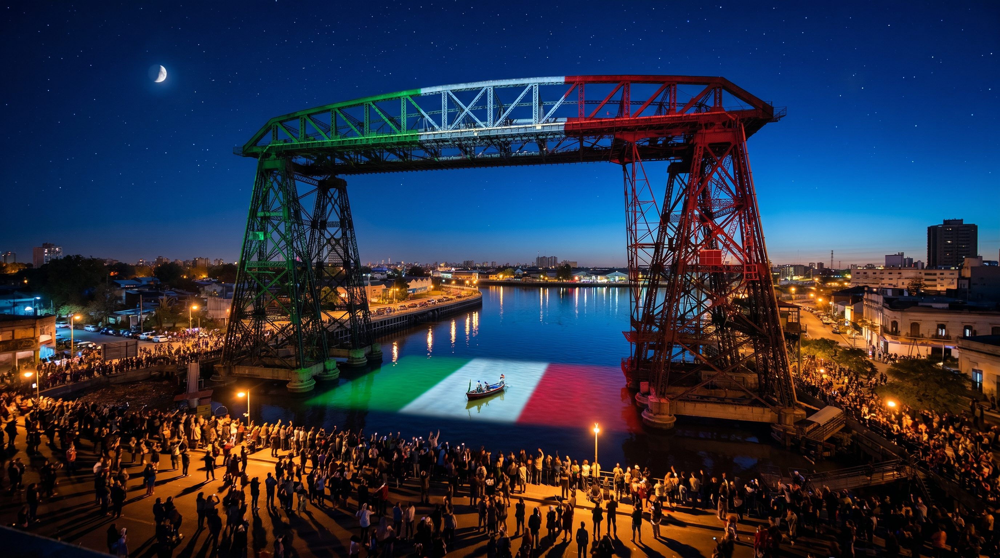
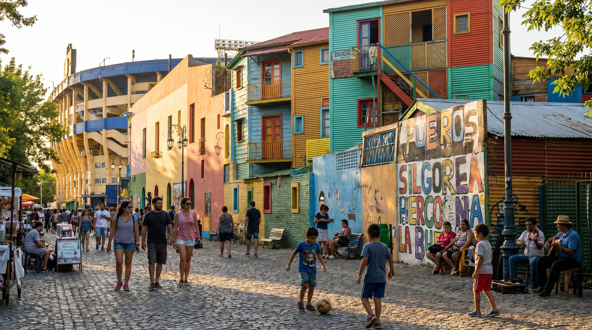
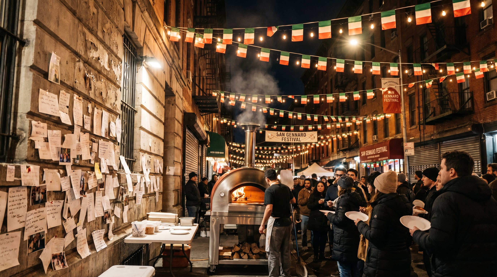
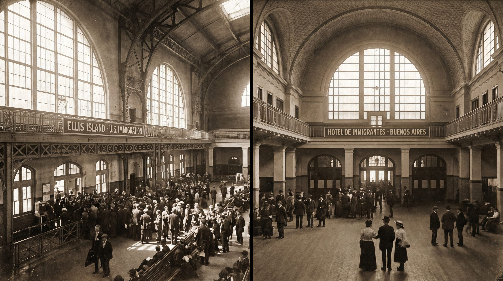
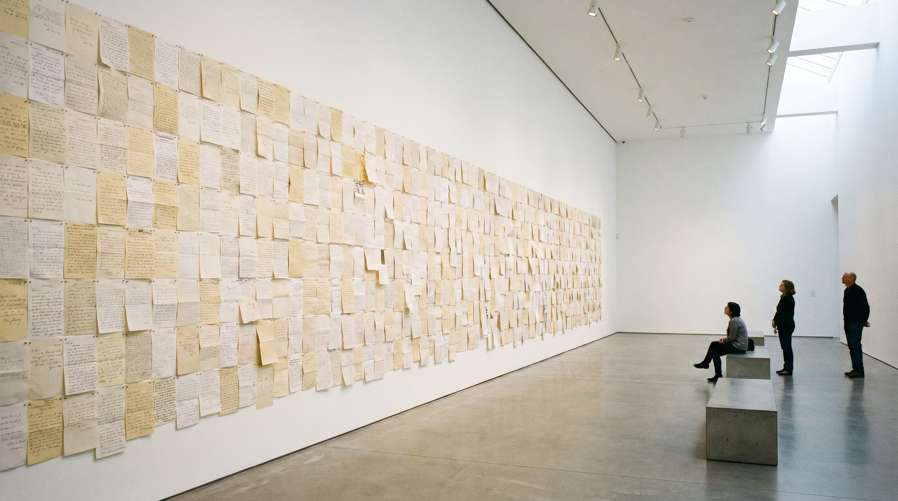

Xona Buenos Aires · Propuesta
Una sola obra.
Cuatro verticales.
Documental
Largometraje y episodios por personaje. Postulable a festivales. Archivo vivo de la diáspora.
Instalación
La pared de cartas. Física, creciente, itinerante. De La Boca al Museo de la Inmigración.
Evento
Tres días en La Boca. Una noche en Nueva York. Protocolar, cultural y popular en simultáneo.
Distribución
Plataformas, medios propios, partnerships internacionales. Ecosistema de contenidos para 2026–2027.
Humanidad Compartida
Napoli
2500 + 100
N.º 02 — Verano de 2026
El hallazgo
Tres chicos buceando en el Golfo encuentran los restos de un barco hundido.
Adentro, miles de cartas. Ninguna llegó nunca a destino.
N.º 03 — Cartas del fondo del mar
«Amore mio, l'ulivo è sopravvissuto al viaggio. L'ho piantato qui.»Carta I
«Carlota, Francesca e Romana non ce l'hanno fatta.»Carta II
«Ti mando 724 lire e tutto quello che avevo da mangiare.»Carta III
«Ho portato il pallone. I bambini qui giocano come noi.»Carta IV

N.º 04
Lo que cruzó
el océano
- 01 el olivo
- 02 la pelota
- 03 la salsa
- 04 el dialecto
- 05 la pizza
- 06 la canción

N.º 05 — El barco de Teseo
Cuando un barco navega tanto que se le reemplazan todas las tablas, ¿sigue siendo el mismo barco?
Napoli viajó. Sus tablas hoy están en Brooklyn, en La Paternal, en Palermo, en Belgrano. Cada descendiente, una tabla nueva del mismo barco.
Vertical I — Documental
Cinco voces,
una sola raíz.
El documental entra a 2.500 años por la puerta de atrás: la mesa, la receta, la pelota, la carta mojada. La historia oficial, afuera.

N.º 06 — El documental
Cinco historias para contar la diáspora
Cinco retratos. Una sola historia.
Cada uno guarda una tabla del mismo barco. Las próximas cinco pantallas son los cinco protagonistas, uno por uno.
01 · Documental
01
El pizzaiolo
Abrió local en Palermo. Guarda la receta de la nonna escrita en napolitano.
La leyó por primera vez frente a cámara. No entendía cada palabra, pero sabía exactamente qué decía.
02 · Documental
02
La nieta
Nunca pisó Nápoles. Prepara la misma salsa todos los domingos desde que tiene memoria.
No sabe de dónde salió la receta. No la heredó escrita: la heredó del gesto.
03 · Documental
03
El tifoso
Llora con el scudetto del 87 con el mismo nudo en la garganta que con el gol a Inglaterra.
Nunca entendió por qué. El documental se lo explica.
04 · Documental
04
El testigo
Conoció a Diego en los ochenta, en el vestuario del San Paolo.
Todavía guarda la servilleta firmada en una caja con otras cartas que tampoco abrió nunca.
05 · Documental
05
El heredero
Abre, frente a cámara, un cofre familiar. Adentro: cartas reales del 1910.
Nunca las había abierto. No sabe italiano.
N.º 07 — El lenguaje visual
Cine. El tono de Sorrentino. La intimidad de El Postino.
La cámara está cerca. La voz en off narra mientras atrás corren frames de películas italianas, archivos de los ochenta, Sofía Loren en el Golfo. Las referencias son El Postino, Sorrentino, El oro de Nápoles.
Historias pequeñas, formato Relatos Salvajes. Cada una completa en sí misma. Fotografía de festival, sonido directo, crudo con time-code.
Vertical II — Instalación
La pared
que sigue creciendo.
Una obra física que no termina con el evento. Cartas colgadas, sonido de puerto, voces en italiano roto. El público escribe y la pared crece en tiempo real.

N.º 08
La pared
La misma pared, en tres ciudades.
En La Boca, en Little Italy, en el muro del consulado. Cartas colgadas. Sonido de puerto. Voces superpuestas en italiano roto, en cocoliche, en español aprendido arriba del barco.
N.º 08 — Cómo funciona
Durante el evento, el público escribe.
Una carta dirigida a alguien que cruzó el océano hace cincuenta, ochenta, ciento veinte años. A alguien que mandó algo que no llegó. Se cuelga al lado de las cartas del fondo del mar. La pared crece en tiempo real, noche a noche.
Cuando el evento termina, la instalación viaja al Museo de la Inmigración. Y sigue creciendo ahí.
"¿Recibiste algo de tu bisabuelo?"

N.º 08b
El objeto
que queda
Cada carta se transcribe y se convierte en postal. Papel de archivo. Letterpress.
El bundle queda en el consulado, se vende en los aeropuertos, se dona al Museo. Lo que no llegó en 1900 se convierte en objeto de 2026.
Vertical III — Evento
Tres días.
Tres audiencias.
Un fin de semana.
Un fin de semana sobre el Riachuelo, anclado en el archivo real de Gardel grabando Cuore napulitano. Y, en paralelo, una noche en Nueva York.

La Boca · Octubre 2026
N.º 09 — El evento
El triángulo de La Boca como set natural
La Fábrica del Colón en un extremo, el Puente Transbordador sobre el río, Caminito atrás de la cancha. El Museo Maradona, ese día, de entrada libre.
Tres venues. Tres audiencias. Un solo fin de semana. Cada día sube una ola distinta de prensa: el viernes la protocolar, el sábado la cultural, el domingo la popular. Las próximas tres pantallas son los tres días, uno por uno.

Viernes — Protocolar
Fábrica del Colón
Un espacio que ya es obra de arte antes de que llegue nadie.
Galpón enorme con escenografías originales del Teatro Colón. Cocktail de apertura: Consulado, autoridades, corresponsales italianos, prensa especializada. Avant-première del cameo AI de Maradona. 200 personas, por invitación.

Sábado — La gran noche
Puente Transbordador
La noche más importante del fin de semana.
Proyección del corto sobre el Riachuelo. Concierto en vivo: tango y canción napolitana en el mismo setlist. Las diez camisetas históricas, de Sallustro a Maradona al tricolor 2023. Pizzaiolo AVPN en vivo, productos DOP. La Fundación Proa como partner cultural.

Domingo — Al aire libre
Caminito
Entrada libre. El barrio entero como venue.
Mate, pizza, familias enteras, abuelos con nietos. La pared de cartas crece en el pasaje más napolitano de Buenos Aires, con la cancha de Boca de fondo. El Museo Maradona abre gratis ese día como parte del programa.
N.º 09 — El anclaje histórico
El archivo real lo hace irreproducible. Este evento solo puede pasar acá.
El evento tiene un archivo real para apoyarse: Gardel grabando Cuore napulitano en 1933. La Boca italiana de Quinquela Martín. El cocoliche como lengua del Riachuelo.
Buenos Aires y Nápoles comparten algo que ninguna otra ciudad puede reclamar: el mismo barco bajó en los dos puertos.

N.º 10
Diego está en todas partes
Cuatro planes en paralelo. El que se abra primero, se ejecuta.

Little Italy · Ellis Island · Brooklyn
N.º 11 — Capítulo Americano
Neápolis llegó a dos puertos
La misma diáspora que bajó en el Puerto de Buenos Aires también desembarcó en Ellis Island. El mismo capítulo, contado desde el otro extremo de la carta hundida.
Brooklyn concentra la tercera generación napolitana más grande del mundo fuera de Italia. La misma noche, en dos ciudades del mismo continente, se leen en voz alta las cartas que no llegaron en 1900. Las próximas tres pantallas son los tres lugares de Nueva York.

01 · Nueva York
01
Mulberry Street
La calle más napolitana de Manhattan. La calle se cierra, la pared se instala.
La misma noche que La Boca. El mismo idioma roto. El mismo plato. Dos ciudades, un solo reloj.

02 · Nueva York
02
Los dos puertos
Proyección del documental en ambas orillas. La historia es la misma.
Alguien que se fue, algo que quedó, algo que llegó igual. Ellis Island como espejo exacto del Hotel de Inmigrantes de La Boca.

03 · Nueva York
03
La instalación
permanente
La pared de cartas en el museo. Más sobria, más escultórica.
Queda después del evento y sigue creciendo en la ciudad — igual que en Buenos Aires, igual que en Nápoles. Tres puntos en el mapa, una sola historia.

Una sola obra en tres actos
Napoli regresa. Por primera vez, en tres continentes.
Napoli
Ferragosto
New York
Septiembre
Buenos Aires
Octubre
La misma pared crece en tres ciudades. Las cartas que no llegaron en 1900 se leen en voz alta en 2026, en tres puertos a la vez.
Vertical IV — Distribución
El evento termina.
El contenido no.
Un sistema de contenidos diseñado para vivir entre 2026 y 2027: spin-offs, postales, archivo vivo y una campaña que arranca antes que el evento.
N.º 12 — El sistema de contenidos
Una obra, muchos canales.
El documental es la fuente. De él salen episodios por personaje, un podcast visual, postales de colección y un archivo donable.
La campaña abre tres meses antes del evento, para que la diáspora ya esté contando su historia cuando empiece la nuestra. La próxima pantalla abre los cuatro pilares.
N.º 12b — Los cuatro pilares
Lo que se publica después
Cada pilar tiene su formato, su canal y su calendario propio. Todos alimentan el archivo vivo.
- UGC
- Mostrame tu Nápoles — campaña abierta tres meses antes del evento. TikTok, Instagram, YouTube Shorts. La diáspora cuenta su propia historia antes de que empiece la nuestra.
- Spin-offs
- Un episodio por personaje: el pizzaiolo, la nieta, el tifoso, el testigo, el heredero. Podcast visual de 10–15 min. Distribución propia + plataformas. Evergreen para 2027.
- Las postales
- Las cartas de la instalación, transcriptas y convertidas en postales de colección. Se venden en aeropuertos, quedan en consulados, se donan al Museo. Objeto físico con vida útil de años.
- Archivo vivo
- Todo el material fílmico de la diáspora, digitalizado y donado al Museo de la Inmigración. Fuente pública para investigadores, familias y medios. La obra que más dura.

Producción · Calidad cine
N.º 13 — El alcance
El alcance, en tres líneas
Documental
Scouting de 15–20 candidatos, shortlist de 12 personajes. Rodaje en Sony FX9 o Alexa Mini, sonido directo. B-roll en La Boca, San Telmo, Caminito, la Bombonera, murales de Martín Ron, Hotel de Inmigrantes. Crudo con log time-coded, transcripciones IT / ES / EN.
Evento + Instalación
Producción integral del fin de semana en La Boca (tres venues, tres audiencias). Gestión Consulado, Asociación Napoletani BA, Fábrica del Colón, Fundación Proa, Museo Maradona. Partner deportivo en cuatro frentes. Instalación física de la pared. Producción de postales de archivo.
PR + Distribución
Press kit trilingüe (IT/ES/EN), mapa de medios completo, corresponsales italianos en BA, influencers ítalo-argentinos. Cuatro olas de comunicados. Campaña UGC tres meses antes. Coordinación con el capítulo Nueva York en paralelo.
N.º 14 — Más allá del brief
Lo que sumamos
Seis extensiones que no estaban pedidas y que convierten un evento en patrimonio.
- Capítulo BA
- Standalone del documental, postulable a BAFICI y Mar del Plata.
- Mini-docs
- Por personaje, podcast visual de 10–15 min. Evergreen para 2027.
- Archivo
- Fílmico de la diáspora, digitalizado y donable al Museo de la Inmigración.
- Mural
- Permanente en La Boca: un artista napolitano y uno boquense.
- Campaña UGC
- Mostrame tu Nápoles, abierta tres meses antes.
- EP bilingüe
- Italiano–español, punto único de contacto con Italia.

N.º 15
Por qué nosotros
- Filo News
- Medio propio con capacidad de amplificación y llegada orgánica. Una plataforma que transforma acciones en conversación y visibilidad.
- Boca Juniors
- Vínculo directo con la dirigencia y principales áreas del club. Acceso fluido, gestión cercana y capacidad de activar oportunidades desde adentro.
- Bilingüe
- Equipo italiano–español con manejo de la burocracia institucional italiana.
- Portfolio
- Cientos de proyectos en toda la región. El trabajo habla solo. Ver showreel →
La idea detrás de todo
Todos somos hijos de alguien.
Celebramos la ciudad más vieja del mundo. Y lo hacemos desde los puertos donde esa ciudad envió a sus hijos: Buenos Aires, Nueva York, el mundo entero.
Nápoles nunca se fue. Cambió de dirección.
N.º 16
Hablemos.
Patrimonio emocional global, construido desde Buenos Aires.
Una call. Treinta minutos. La propuesta completa.